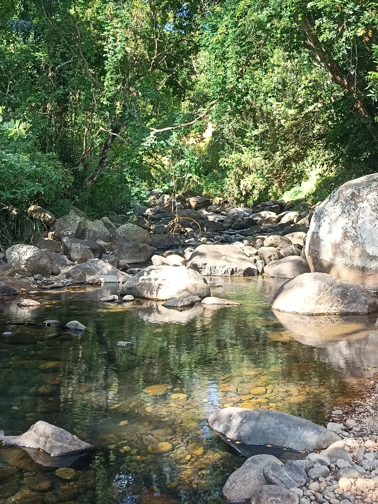
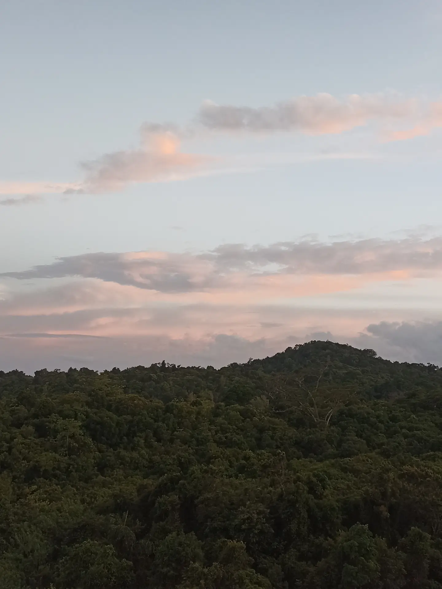
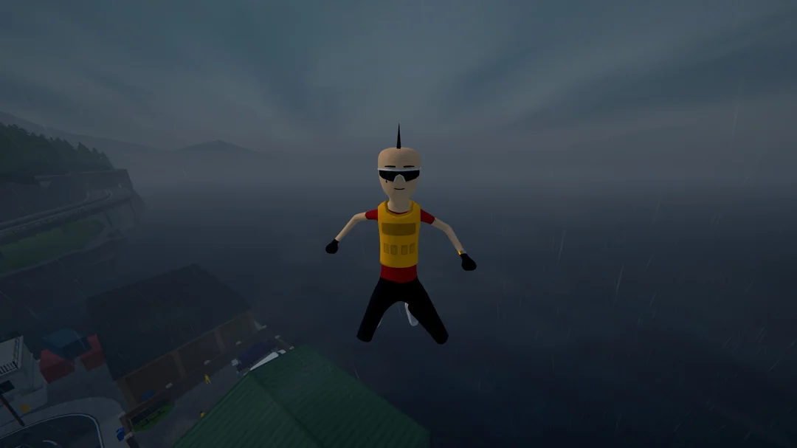
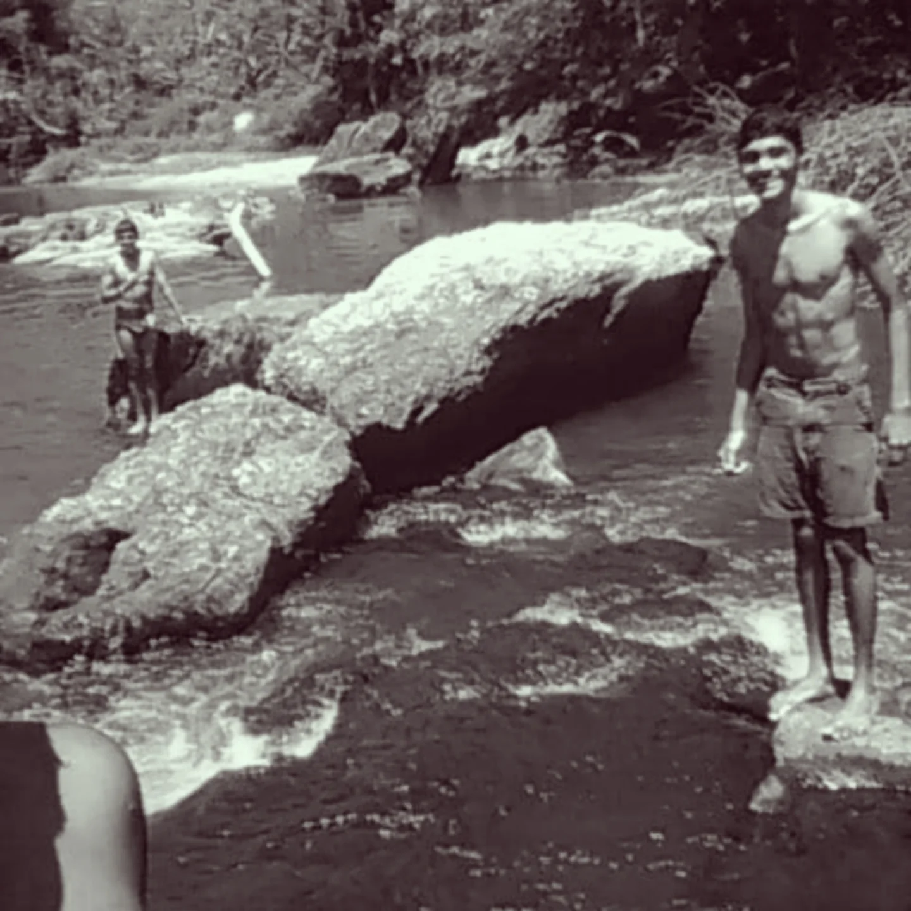
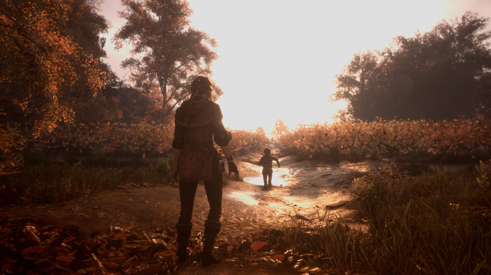

On repeat this week: Love Me Different - Hayley Williams. Trying to finish the portfolio soon. I need to start playing games again. I miss it!
Notes
The stuff that doesn't fit anywhere else on this site: what I'm playing, half-finished drawings, songs on loop, and the slow build of a game I'm making in my spare time. Less portfolio, more open tab.

Pulled over on the way back just to look at this for a minute. Some skies are worth the extra five minutes on a long drive.
Rewired my whole desk setup this week, mostly so I'd stop losing ten minutes every morning untangling cables I refuse to label.
Half a sketch of a dog from the corner of a notebook page. Might finish it, might not. That's most of them.

Serenity.
Power cut lasted long enough that I gave up and read on the balcony until it came back. Turned out to be the better evening.

Tyler, bless you!
Found an old photo folder I'd forgotten existed. Spent way too long scrolling through it instead of doing anything I was actually supposed to.

Good kids, always in school. Good old days. 2018.

Plague Tale. The most underrated game I've played, no contest. Quietly brutal in a way that stuck with me longer than I expected.
Years of being an opinionated, picky player eventually turned into wanting to build one myself. So I'm making a voter-education visual novel in my spare time, clumsily at first, AI-assisted now. Same instinct as everything else here: research first, then figure out how to make it land. Working title: Road Remains.